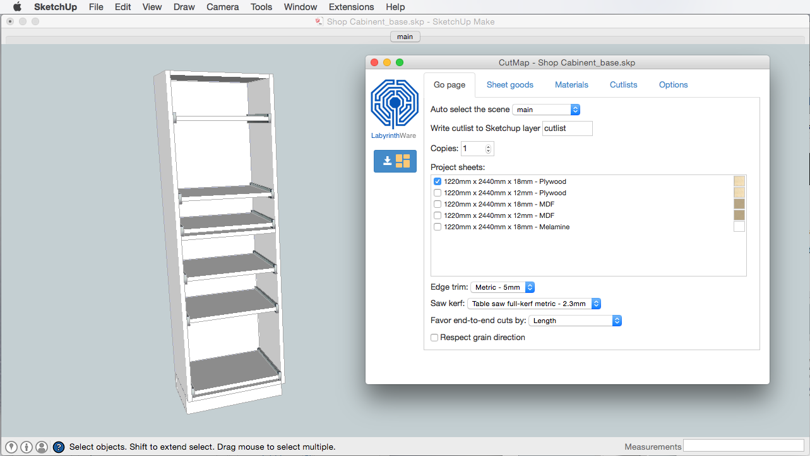
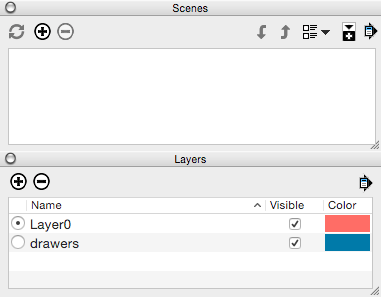

<div class="container bs-docs-container">
  <div class="row">
    <div class="col-md-12" role="main">
      <div class="cm-docs-section">
        <h2 id="cm-firstrun" class="page-header">First Run</h2>

        <p>In CutMap, cutlists are created in scenes and layers that are separate from
          your main model.</p>

        <p>
          If your SketchUp document doesn't contain scenes, or all the geometry is
          written to the default "layer0", then CutMap will ask you if you would
          like it to add a main scene and layer.
        </p>
        <h5>You will see this screen:</h5>
        <div class="pop">
          
        </div>

        <p>CutMap will change your document to this separate scene and layer structure for you. Using
          multiple scenes and layers is a very useful way to use SketchUp in
          general.
        </p>
        <h5>After clicking on "Create Main Scene":</h5>
        <div class="pop">
          
        </div>

        <p>As you can see in the screen shot above, CutMap has created a scene
          named "main" and has made the model visible in that scene. Cutlist has
          also created a layer named "main" and has placed components that were
          previously in layer0 into this layer.</p>
        <h5>Scenes and layers in model before:</h5>
        <div class="pop">
          
        </div>

        <p>As you can see from the above SketchUp windows, this model had no scenes and two layers, one named
          "drawers" and the default "layer0". The sliding shelf components are
          in the "drawers" layer and everything else is in "layer0".</p>
        <h5>Scenes and layers in model after:</h5>
        <div class="pop">
          
        </div>

        <p>After CutMap creates the main scene and layer, we now have a new
          scene and a new layer, both named "main". All components that were in
          "layer0" are now assigned to the layer "main". The sliding shelf
          compnents remain in the "drawers" layer as before.</p>

        <p>Going forward, a good strategy is to continue drawing into "layer0",
          but once you have converted the geometry into components (or groups),
          to then assign those components to the layer "main" (using the
          SketchUp <em>Entity Info</em> window).</p>
        <h5>Demonstration:</h5>
        <!-- 16:9 aspect ratio -->
        <div class="embed-responsive embed-responsive-16by9">
          <iframe class="embed-responsive-item"
                  src="https://www.youtube.com/embed/NtIse6cQQBE" allowfullscreen>
          </iframe>
        </div>
      </div>
    </div>
  </div>
</div>
